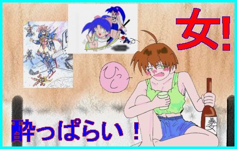

| DEDICATED STORIES | CONTRIBUTER | RECOMMEND |
| 酔っぱらい、ねぃちゃん！(TEXT#1) | 水谷秋夫さん | 昔男だったけどいまは女として生活している主人公の一人称による物語。ファンタジーな雰囲気とリアルな雰囲気が同居していて面白いです。あとがきにある「定番の仮定」について考えさせられるストーリーですね。 |

|
酔っぱらいって、ＴＳキャラと似てるよね！ 本人は酔ってない（男だ）と言ってるのに、第三者が見ると、 ただの酔っぱらい（女）にしか見えないんだよね！ 本人に自覚が無い分、端から見てると本当に面白いよね！ |